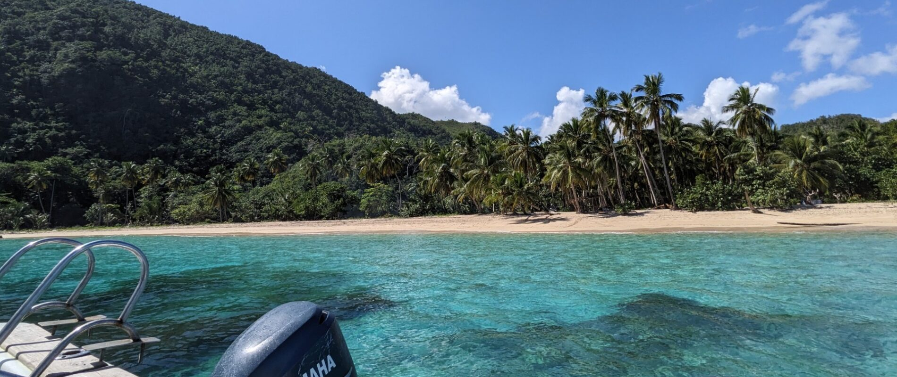
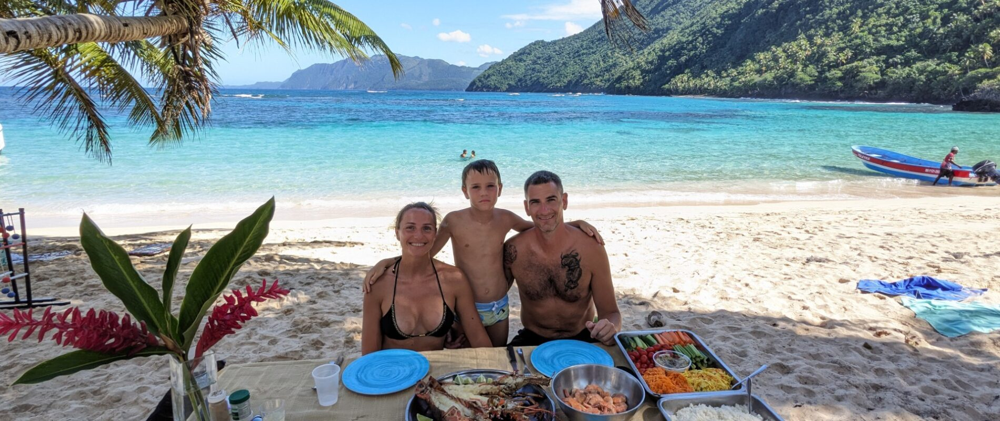

Playa Jackson
Snorkeling aux coraux, rivière d’eau douce, BBQ, puis arrêt à Playa Escondida pour le saut du toit.
5 000 RD$ / personneLas Terrenas · Samaná · République Dominicaine
Snorkeling, plages sauvages, pêche sportive et couchers de soleil caribéens, avec une équipe trilingue qui s’occupe de tout.
Nos expériences
Choisissez votre sortie. Cap Caraibes prépare le bateau, l’équipage, les boissons, l’équipement et l’ambiance.
Journée tout inclus vers Playa Jackson ou Playa Ermitaño avec BBQ, snorkeling et musique à bord.
Dès 5 000 RD$ / personne 02Récifs, poissons tropicaux et épaves submergées dans les eaux turquoise de Samaná.
Dès 550 USD / groupe 03Sortie au large avec capitaine expérimenté, équipement complet et poisson pour vous.
750 USD / groupe 04Navigation de fin de journée, cocktails au crépuscule et vue sur les rochers de Las Ballenas.
Dès 350 USD

Excursion catamaran
Playa Jackson et Playa Ermitaño combinent eaux turquoise, montagnes, snorkeling et BBQ sur la plage. L’excursion est pensée pour les groupes qui veulent une vraie journée sans compromis.
Snorkeling aux coraux, rivière d’eau douce, BBQ, puis arrêt à Playa Escondida pour le saut du toit.
5 000 RD$ / personnePanorama spectaculaire, récifs cristallins, BBQ sur la plage et arrêt à Playa Moron.
5 500 RD$ / personneSnorkeling
Deux formats selon le niveau d’aventure recherché: Las Ballenas pour une sortie courte, Puerto Escondido pour une journée plus immersive.
3 h, départ à 9 h ou 14 h, jusqu’à 15 participants. Deux heures de snorkeling sur les récifs coralliens.
550 USD6 h, départ à 8 h. Navigation panoramique, snorkeling à 7 m et deux épaves à explorer.
1 000 USDPêche en haute mer
Départ à 7 h de Playa Ballenas pour une demi-journée de pêche sportive. L’équipement, les boissons et le casse-croûte sont inclus.

Coucher de soleil
Naviguez vers les rochers de Playa Las Ballenas pendant que le ciel change de couleur. Option cocktail avec Angels Caraibes sur demande.
17 h à 19 h · 1 à 15 personnes
350 USD / personneAvec Angels Caraibes · adultes seulement
WhatsApp +1 809 467 4509Tarifs
La carte complète reste disponible dans la langue sélectionnée. Les prix peuvent être confirmés au moment de la réservation.

Contact
Envoyez les détails de votre sortie. Le formulaire prépare un message clair pour l’équipe Cap Caraibes.